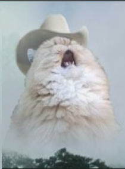

Hi, I am Volodymyr
Студент ДУІКТ групи ТЦР-21. На цьому сайті зібрані всі лабораторні та практичні роботи.
Download Resume

Студент ДУІКТ групи ТЦР-21. На цьому сайті зібрані всі лабораторні та практичні роботи.
Download Resume